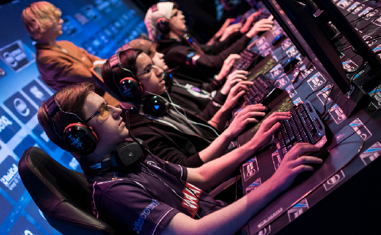
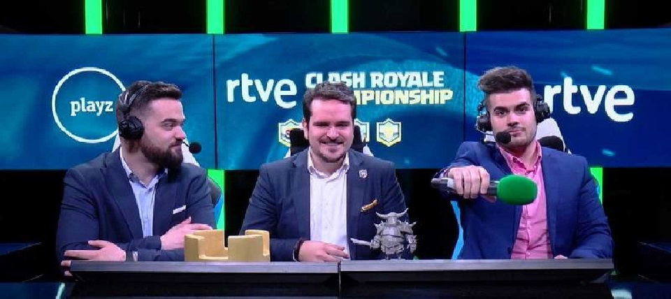
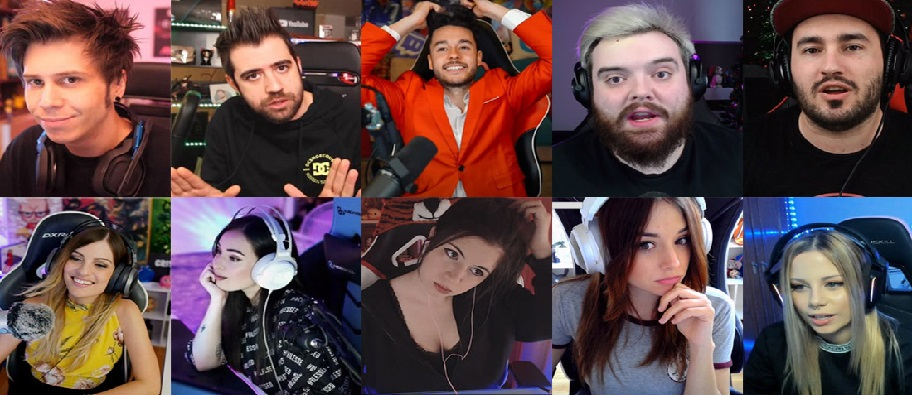
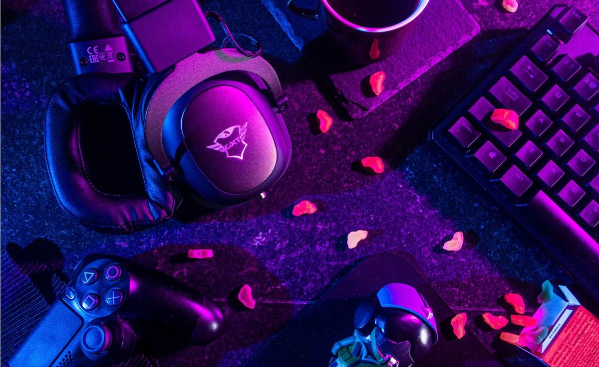
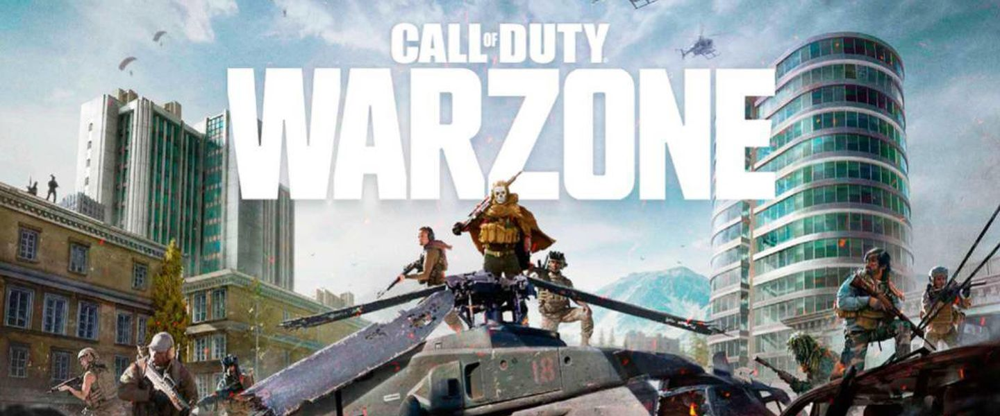
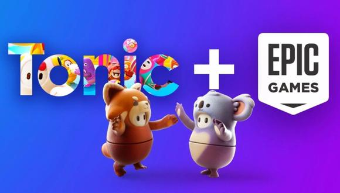
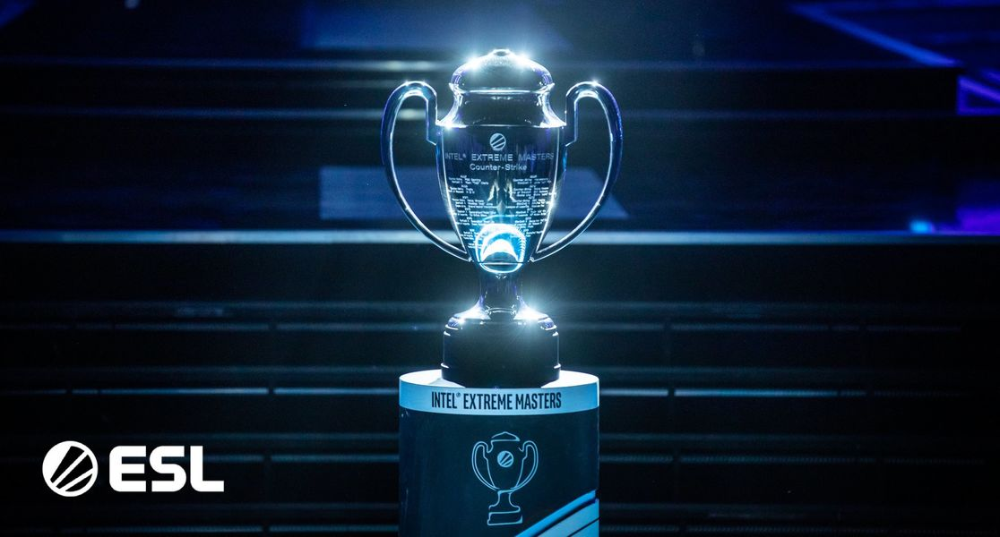

Bienvenido a las Noticias de E-Sports
Top 4 mejores empleos relacionados a los E-sports
- 1-Jugador profesional de videojuegos - 180.000 euros 
- Son aquellas personas que quieren hacer de su pasión su profesión. No es necesario un equipamiento profesional para comenzar como jugador profesional. Es tan fácil como empezar apuntándose en copas abiertas donde se puede competir por poco dinero o de forma gratuita. El salario de un jugador profesional puede oscilar entre los 1.000 y 5.000 euros al mes. Sin embargo, los mejores jugadores del planeta firman contratos al más puro estilo del fútbol o el baloncesto, con nóminas que pueden llegar hasta los 15.000 euros al mes, al margen de lo que ganen en premios.
- 2- Comentarista de e-Sports - 50.000 euros 
- Se trata de una profesión bastante desconocida por el gran público. Cada vez hay una audiencia mayor que disfruta viendo estos espectáculos e incluso llenan estadios para acoger estas competiciones. Tienen que tener la capacidad de convertir el partido más aburrido en una experiencia inolvidable. En España, al margen de personajes reconocibles como Ibai Llanos, Muito, Alex Polo o Noa, la profesión de 'caster' no está muy extendida y no existen suficientes datos al respecto. No obstante, según la web SimplyHired.com, en otros lugares del mundo el salario medio se sitúa en torno a los 50.000 euros anuales.
- 3-Creador de contenido o streamer - 48.000 euros 
- En realidad, esta cifra es meramente orientativa, pues este puesto sería lo más cercano a ser un influencer de los videojuegos. Su influencia se basa en su capacidad para atraer usuarios a la aplicación, así como en el interés que despiertan las recomendaciones que realizan en sus perfiles y el número de seguidores. Tanto los streamers como los gamers entran en esta categoría, que no ofrece un sueldo ni mucho menos fijo o estable. Tomamos como referencia plataformas como Twitch, en la que los streamers más conocidos reconocen ganar en torno a 4.000 euros al mes (publicidad aparte), aunque hay casos como el de Ninja, el streamer con más suscripciones de Twitch, gana unos 370.000 euros al mes. Evidentemente, nadie llega a esos niveles de ingresos.
- 4-eSports Marketing Specialist - 45.000 euros 
- Las empresas han creado alrededor de los eSports un ecosistema propio que va desde los videojuegos y los macroeventos hasta la creación de comunidades o el merchandising. Los encargados de generar toda esta narrativa transmedia son los profesionales del marketing deportivo. En este caso, tampoco hay muchos datos disponibles en España, pero según Glassdoor, se puede ganar entre 35.000 y 45.000 euros por ser eSports Marketing Specialist.
¡Mil millones de viewers! eSports y videojuegos tendrán gigantesca audiencia para 2025

El número de personas que siguen los deportes electrónicos ('eSports') y las partidas de videojuegos en directo no para de crecer y se espera que llegue a la cifra de mil millones de personas en 2025, según previsiones de Juniper Research. La firma de analistas Juniper Research elaboró un documento de predicciones de mercado y oportunidades emergentes sobre el sector de los 'eSports' y los juegos en 'streaming', centradas en cómo evolucionará el mercado en los próximos cuatro años.Como ha compartido la compañía en un comunicado remitido a Europa Press, el crecimiento de los 'eSports' y de las partidas de videojuegos en 'streaming' se debe a factores como los patrocinadores, con empresas que invierten cada vez más en este sector. El sector de los 'eSports' y las emisiones de partidas de videojuegos en directo a través del 'streaming' tendrán un crecimiento del 70 por ciento en los próximos cuatro años, con respecto a los datos actuales.Así, en 2025 su valor pasará a ser de más de 3 mil millones de euros (3 mil 600 millones de dólares), según las estimaciones de Juniper, mientras que su valor en 2021 es de mil 769 millones de euros (2.100 millones de dólares). El crecimiento económico del sector vendrá acompañado también de un aumento de los espectadores en los próximos años. A finales de 2021 se estima que habrá 800 millones de seguidores de los 'eSports' y las partidas en directo -con una población mundial de 7 mil 700 millones de personas-, pero se espera que esta cifra aumente hasta los mil millones de personas en 2025. Esto supondrá "una de cada nueve personas en el mundo", según la firma de análisis. Este crecimiento estará sustentado por los seguidores de la región de Asia-Pacífico, que supondrán el 50 por ciento de la audiencia dentro de cuatro años, pero también por el crecimiento del sector en América Latina, donde en 2025 se espera que el número de seguidores llegue a los 130 millones de personas. Se prevé que el aumento en las visualizaciones estimule la competición entre las plataformas de 'streaming', como Twitch y YouTube, y que estas promocionen este tipo de contenidos a una audiencia más amplia, equiparando a los 'eSports' con otras industrias como la del entretenimiento.
El número de jugadores baneados de Warzone asciende a 300 000
Activision lleva luchando contra los tramposos en la saga Call of Duty desde sus inicios. Uno de los títulos más afectados ha sido Warzone. El battle royale gratuito es un nido por el que pululan muchos jugadores deshonestos, dispuestos a aprovechar cualquier pequeño error para mejorar sus estadísticas. La batalla contra estos tramposos ha llevado a la editora a diseñar un fuerte programa anti-cheats para minimizar el impacto que tienen con el resto de jugadores. Un programa que también buscará e identificará a los proveedores de los programas creados para jugar de esta forma tan chapucera. La editora ha procedido a banear a 60 000 nuevos tramposos. Todos ellos se suman a los que ya estaban permabaneados y hace que la suma ascienda a 300 000 cuentas que no podrán volver a jugar a Call of Duty. Activision también quiere ser transparente para todos sus jugadores. Ha publicado todas las medidas que ha tomado para detener a los tramposos en sus juegos.
Epic Games compra la desarrolladora del videojuego Fall Guys
Epic Games ha decidido comprar Tonic Games Group, una decisión que “acelerará los planes para mejorar Fall Guys y llevarlo a tantos jugadores como sea posible”, como ha expresado la desarrolladora de Fall Guys en un comunicado.
Tanto Mediatonic como Epic Games han asegurado que esta adquisición no afectará a los jugadores de Fall Guys ni al desarrollo del videojuego, y que el título podrá seguir comprándose desde las tiendas de Steam y PlayStation como hasta ahora.
“[Epic] comparte nuestra misión de crear y apoyar juegos que tienen un impacto positivo, empoderar a otros y resistir la prueba del tiempo, y no podríamos estar más emocionados de unir fuerzas con su equipo”, ha asegurado Dave Bailey, cofundador y CEO de Tonic Games Group.
“No es ningún secreto que Epic invierte en la construcción del metaverso y Tonic Games comparte este objetivo. Mientras Epic trabaja para construir este futuro virtual, necesitamos un gran talento creativo que sepa cómo crear juegos, contenido y experiencias poderosos”, ha afirmado por su parte Tim Sweeney, fundador y director ejecutivo de Epic Games.
La peor audiencia de la final de IEM Katowice en los últimos 5 años
El pasado fin de semana se disputó uno de los torneos más importantes e icónicos de CS:GO, la IEM Katowice, cuna del deporte electrónico y uno de esos títulos que cualquier profesional quiere ganar. El COVID ya provocó en 2020 que se tuviese que jugar sin público por primera vez en su historia, y en 2021 ha sido más de lo mismo, uno de los factores del desplome de audiencia, pero no el único. Tal y como ha publicado Esports Charts, la final de 2021 ha tenido un pico de 417.000 personas, menos de la mitad que en 2020 que fue de 1 millón de personas. El mayor pico en los últimos años fue en 2019, con 1,2 millones de espectadores.
- Gambit Esports vs Virtus.Pro (417k)
- Na'Vi vs G2 Esports (1M)
- ENCE vs Astralis (1,2M).
- Fnatic vs FaZe Clan (534k)
- Astralis vs FaZe Clan (449k)
Cantidad de Viewers en las ultimas 5 finales de la Katowice
® Marca Registrada